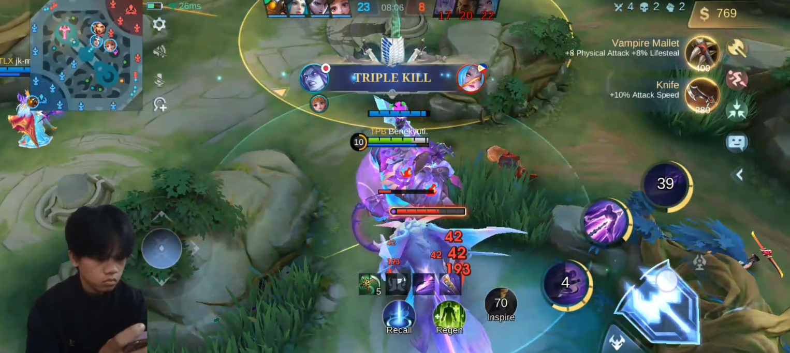
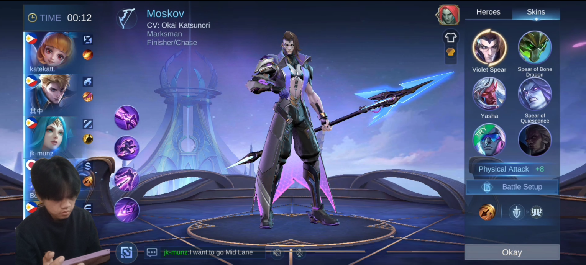

Twinkle - Toes
Twinkle - Toes
Twinkle - Toes
Twinkle - Toes
Hero Name: Moskov
Rank: Mythic
Game Mode: Classic
Mobile Legends: Bang Bang (MLBB) is a mobile multiplayer online battle arena (MOBA) game developed and published by Moonton, a subsidiary of ByteDance. The game was released in 2016 and grew in popularity, most prominently in Southeast Asia.
• Tough Boots
• Corrosion Scythe
• Demon Hunter Sword
• Golden Staff
• Winds of Nature
• Haas Claws
For your movement item, go for Tough Boots to reduce crowd control and slow effects. You can upgrade your Boots after purchasing two or three core items.
During the laning stage, use Abyss Walker to maneuver and position yourself for a well-aimed Spear of Misery cast, which can pin your enemy against a wall. Once you successfully achieve this, activate Inspire and follow up with basic attacks.
Skin Used: Painted Violet Spear
Skin Type: Star
In Mobile Legends, I have a unique approach to hero selection in-game. I prioritize team coordination by allowing my allies to choose their preferred hero roles first, and then I fill in the remaining role. Typically, I put for the Marksman role. Early in the game, I adopt a cautious playstyle, especially if the enemy team's composition leans towards aggression. My focus is on maintaining lane control and farming efficiently to build up my hero's strength. This approach ensures that I contribute significantly in the later stages of the match. As the game progresses and I feel confident in my hero's power spike, I become more proactive. I seize opportunities to ambush unsuspecting enemies, leveraging my hero's strengths to secure kills and turn the tide of the battle. It's immensely satisfying when these calculated ambushes result in a triple kill or more. By adhering to this strategy and adapting to the dynamics of each match, I consistently contribute to my team's success and ultimately secure victory. Mobile Legends rewards strategic thinking and teamwork, and my approach reflects these core principles.